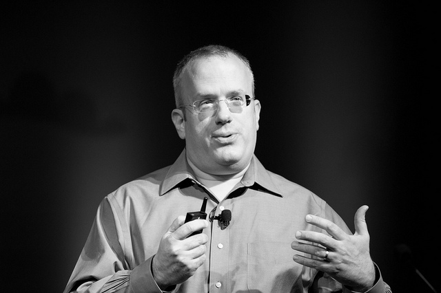
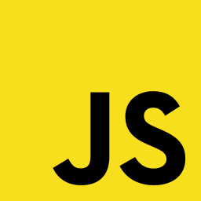
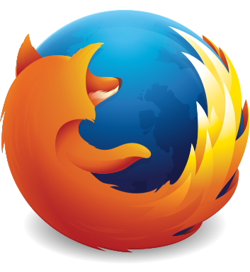
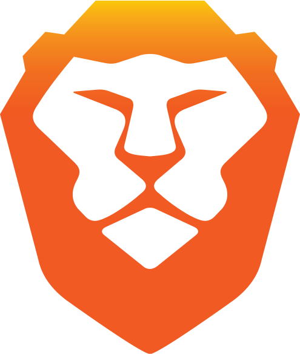

brendan eich
Founder & CEO, Brave Software. Created JavaScript. Co-founded Mozilla and Firefox.
Brendan Eich
Founder & CEO, Brave Software. Created JavaScript. Co-founded Mozilla and Firefox.
Brief History
Brendan Eich was born in 1961 in Piitsburg, Pennsylvania. He joined the University of Santa Clara, where he studied mathematics and computer science. In 1985, he obtained a Master's degree in computer science from the University of Illinois at Urbana-Champaign. He began his career in the IT sector at Silicon Graphics, a company specializing in computer graphics and 3D processing, where he spent seven years in charge of code, operating system and network. But it was above all his experience on behalf of the Netscape Communication Corporation (an American IT company acquired by AOL) that would mark a turning point in his professional career and impact the web world as a whole.
But it is mainly his experience on behalf of the Netscape Communication Corporation (a American IT company bought by AOL) which will mark a turning point in his career professional and which will impact the web world as a whole.

Javascript
Eich started work at Netscape Communications Corporation in April 1995. Eich originally joined intending to put Scheme "in the browser",but his Netscape superiors insisted that the language's syntax resemble that of Java. As a result, Eich devised a language that had much of the functionality of Scheme, the object-orientation of Self, and the syntax of Java. He completed the first version in ten days in order to accommodate the Navigator 2.0 Beta release schedule, and was called Mocha, but renamed LiveScript in September 1995 and finally named JavaScript in December. Eich continued to oversee the development of SpiderMonkey, the specific implementation of JavaScript in Navigator.

Mozilla
In early 1998, Eich co-founded the Mozilla project with Mitchell Baker, creating the website mozilla.org that was meant to manage open-source contributions to the Netscape source code.He served as Mozilla's chief architect. AOL bought Netscape in 1999. After AOL shut down the Netscape browser unit in July 2003, Eich helped spin out the Mozilla Foundation. In August 2005, after serving as Lead Technologist and as a member of the Board of Directors of the Mozilla Foundation, Eich became CTO of the newly founded Mozilla Corporation, meant to be the Mozilla Foundation's for-profit arm. Eich continued to own the Mozilla SpiderMonkey module, its JavaScript engine, until he passed on the ownership of it in 2011. On March 24, 2014, Eich was promoted to CEO of Mozilla Corporation. Gary Kovacs, John Lilly and Ellen Siminoff resigned from the Mozilla board after the appointment, some expressing disagreements with Eich's strategy and their desire for a CEO with experience in the mobile industry. Critics of Eich within Mozilla tweeted to gay activists that he had donated $1,000 to California Proposition 8, leading Eich to say on his blog that he was sorry for “causing pain” and pledged to promote equality at Mozilla. Gay activists created an online shaming campaign against Eich, with OkCupid declaring they would block access to the Firefox browser unless he stepped down. Others at the Mozilla Corporation spoke out on their blogs in his favor. Board members wanted him to stay in the company with a different role. On April 3, 2014, Eich stepped down as CEO and resigned from working at Mozilla after it was revealed that he donated funds to a California Proposition 8 campaign whose objective was to ban gay marriage in California. In his personal blog, Eich posted that "under the present circumstances, I cannot be an effective leader." Andrew Sullivan said of Eich's departure that "there is not a scintilla of evidence that he has ever discriminated against a single gay person at Mozilla" and the episode "should disgust anyone interested in a tolerant and diverse society." Conor Friedersdorf argued in The Atlantic that "the general practice of punishing people in business for bygone political donations is most likely to entrench powerful interests and weaken the ability of the powerless to challenge the status quo".

Brave
Eich is the CEO of Brave Software, an internet security company which has raised $2.5 million in early funding from angel investors. The company's co-founder is Brian Bondy, who worked on Firefox and Khan Academy. The company's employees include Marshall Rose, a network protocol engineer, and Yan Zhu, who worked on SecureDrop and Tor. On January 20, 2016, the company released developer versions of its open-source Brave web browser, which blocked ads and trackers and included a micropayments system to offer users a choice between viewing selected ads or paying websites not to display them.
"If the web can be evolved to include the missing APIs and have better performance, [developers] won't need to go beyond the web."